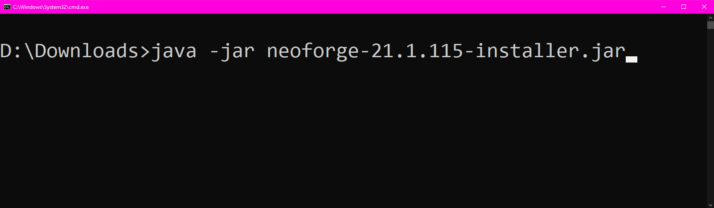

If double-clicking the JAR file doesn't work, you can run it from the command line using these steps:
Navigate to your Downloads folder in File Explorer. Then, click the address bar (or use Ctrl + L) and type cmd, then press Enter. This will open Command Prompt in the current directory.
In the Command Prompt window, type the following command:
java -jar neoforge-21.1.115-installer.jarThen press Enter. This will execute the JAR file and launch the NeoForge installer.
Once the installer runs successfully, return to the main tutorial to continue with the installation process.